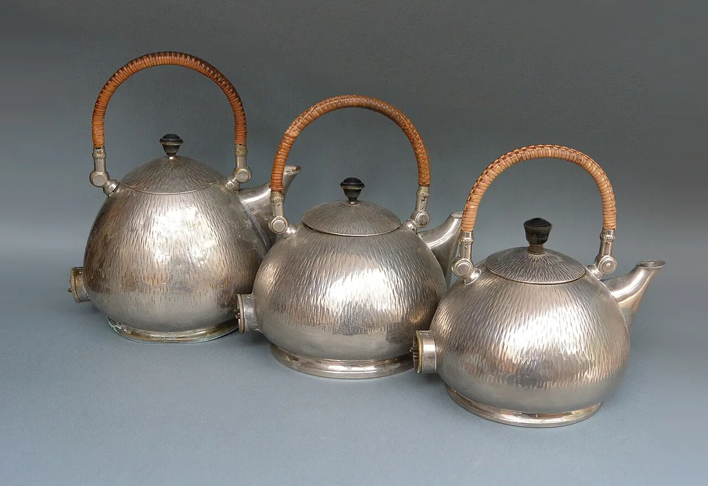

Sessão 01 / O feed como objeto desenhado
Quem escolheu o que viste?
Se mudarmos a regra, muda o mundo que nos aparece?
Começar
Recupera
De memória, sem abrir o caderno.
De memória
Sobre a sessão 10 do Módulo 1.
Explicar uma escolha é dizer o que se quis fazer?
Confirmar
Não chega. Aponta para o texto e explica o efeito da escolha.
Se uma fonte não responde à tua pergunta, o que fazes?
Confirmar
Reconheces o limite, em vez de a forçar.
Que pergunta trouxeste do Módulo 1 para este?
Vê
Observa primeiro. Lê depois.
Material 1 de 3: A chaleira da AEG
Observa a chaleira. Diz para quem foi desenhada e para quê. Ainda não digas se gostas.

Depois, lê: Peter Behrens desenhou para a AEG as chaleiras, as lâmpadas, os cartazes, o logótipo e as fábricas. As chaleiras combinavam três formas, três acabamentos e três tamanhos: peças em série, variação por combinação.
Material 2 de 3: O tear de Jacquard
Procura a tira perfurada. O que muda no tecido se trocares a tira?
Máquina de Jacquard para cartões de papel contínuos (sistema Verdol), Musée des Arts et Métiers, Paris. Fotografia de David Monniaux, 2006, CC BY-SA 3.0, Wikimedia Commons.

Cada furo levanta um fio; a sequência dos furos é o desenho do tecido.
Material 3 de 3: A regra três-dois-um
Lê a regra. Ainda não faças contas.
Obras e materiais
Decide
Primeiro em silêncio, cada pessoa. Depois em grupo.
Sem ecrã
Primeiro, em silêncio
Prevê que temas restam à terceira ronda. Guarda uma razão, sem a dizer ainda.
Três minutos. Escreve a escolha e uma razão no cartão de decisão. Depois, uma volta: cada pessoa lê o seu cartão, sem comentários.
Depois, em grupo
- Comparem as previsões. Que temas desaparecem, e porquê?
- Se a regra contar segundos em vez de gostos, o feed fecha-se mais depressa ou mais devagar?
- Que objeto da sala foi desenhado para vocês, e qual foi desenhado para quem o vende?
No fim, registem a decisão e uma razão que ficou vencida.
Comparar razões
Um algoritmo é um conjunto finito de regras que transforma uma entrada numa saída: descreve-se, e por isso discute-se. Na versão 2, ficar mais tempo num cartão não explica, por si só, o motivo. Uma simulação não revela as regras de uma plataforma real.
Faz
Em papel ou no ficheiro do grupo.
Em papel
- Corram o feed de papel nas duas versões: a 1 conta gostos, a 2 conta segundos medidos em segredo. Registem as rondas no guião do aluno.
- Escrevam a regra em três linhas (entrada, regras, saída) e o tema que desapareceu sem ninguém o pedir.
- Começa o diário de um feed: sete dias, a mesma aplicação, os cinco primeiros temas. Só temas: nunca nomes, contas ou capturas com pessoas. Sem redes sociais? Usa a página inicial de uma plataforma de vídeo sem sessão iniciada, ou trabalha em dupla.
Rever com outra pessoa
Outro grupo põe a vossa regra a correr só com as três linhas.
Quem revê marca uma coisa que se percebe e uma que falta, e faz uma pergunta.
GuardarCasa 1 do mapa do Contra-feed: A regra
A regra em três linhas (entrada, regras, saída) e o tema que desapareceu.
- 1A regra
- 2O sinal e o custo
- 3As regras da casa
- 4A pergunta e o público
- 5Os meios e os créditos
- 6O caso
- 7Conceito e guião v1
- 8Ensaio e guião v2
- 9Defesa e manifesto
- 10O que o público viu
Leva
Em papel, antes de sair.
Em papel
Em papel, antes de sair
Numa frase: o que muda quando a regra conta segundos em vez de gostos?
Confirma
- Nomeias a entrada, a regra e a saída.
- Separas a simulação de uma plataforma real.
- Dizes uma consequência para quem vê.
Depois, no telemóvel
Dois ou três dias depois da sessão.
O registo fica neste aparelho.